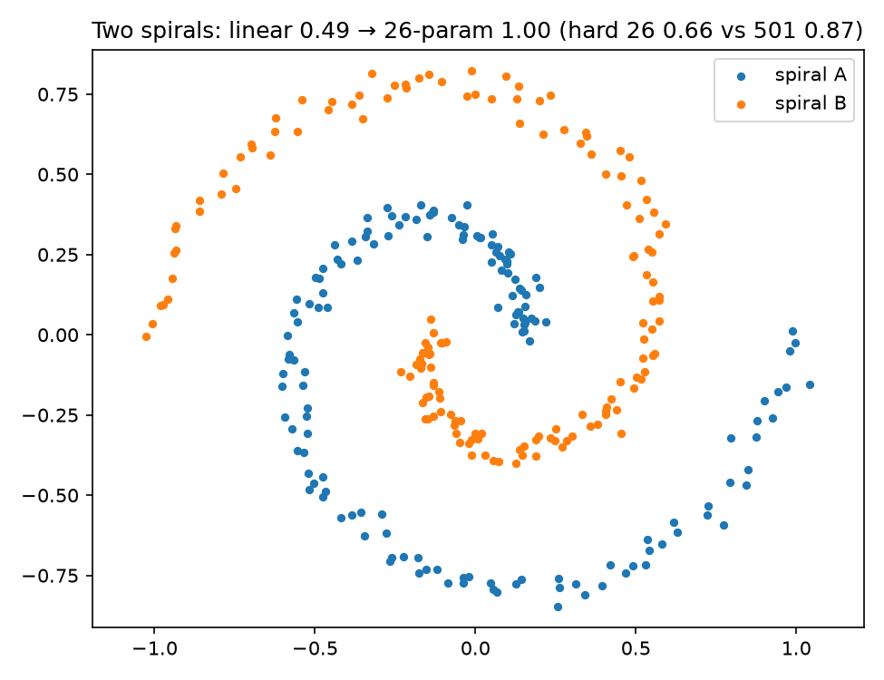
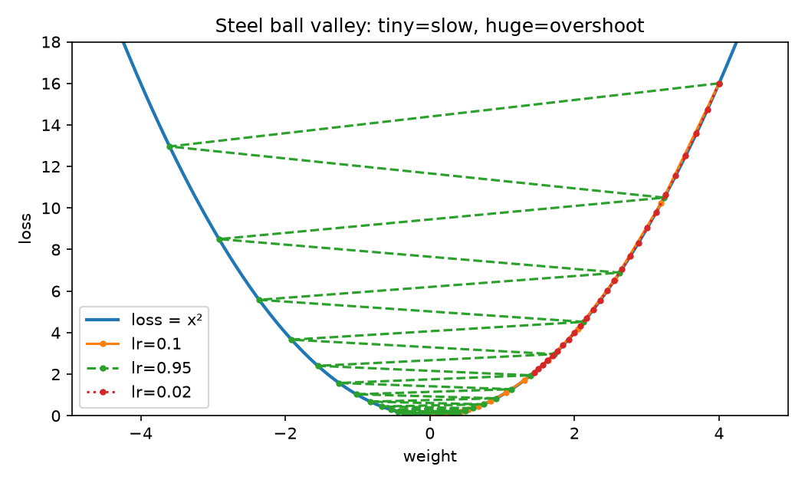
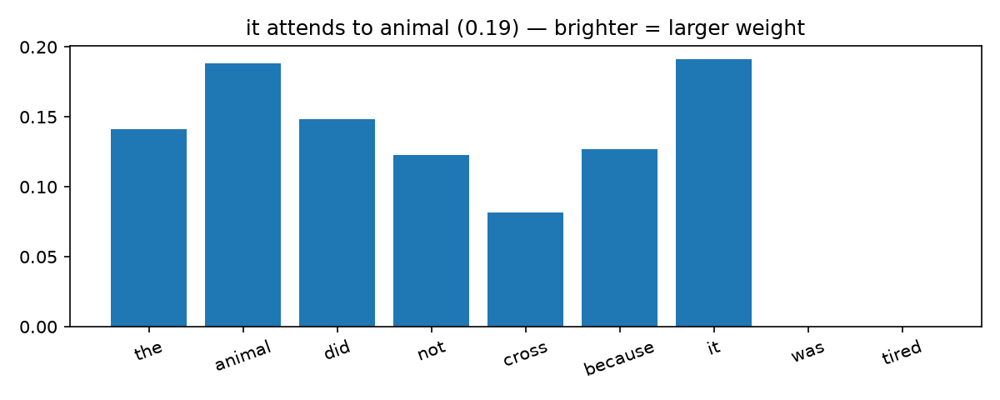
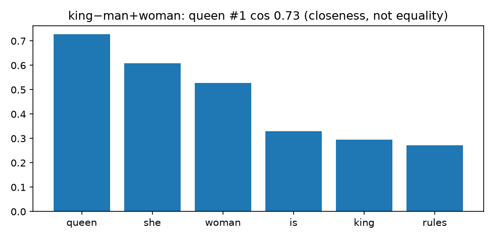
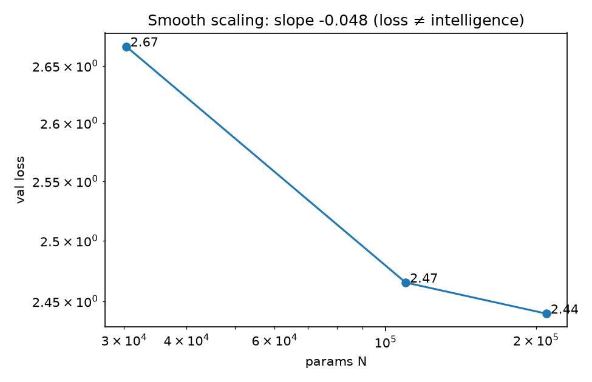
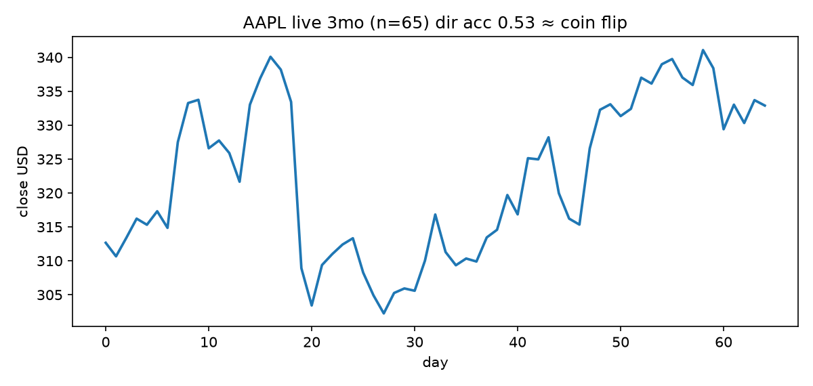

🔬 One Dial to a Prediction Engine
Type a question, get an answer. Behind each word: billions of multiplications nobody hand-coded. Rebuilt here from one dial — executed, measured, plotted.
CEO summary: rules→examples wins (100%) • learning is downhill walking • 26 dials 49%→100%, hard needs ~500 • edges→words→attention→next-token • tiny GPT 3.55→2.34, scaling slope −0.048 • live markets 52.6% = coin-flip. Low loss ≠ understanding.
🎬 Watch (5s) + See
Valley demo: tiny crawls, huge explodes.

26 dials: 49%→100% gentle; hard 66% vs 501-param 87%.





Live snapshot 2026-10-06Z
BTC 85,980 → 86,082 live • AAPL 332.89 • EUR 0.89254 GBP 0.75616 JPY 158.23 • AAPL 3-mo n=65, ridge vs persist MSE 0.000159 vs 0.000170, direction 52.6%.
🌱 Beginner path (2 min)
- Dial: number in → dial decides weight. 3 dials + bias = 4 numbers.
- Loss valley: height = mistakes. Step downhill. Small crawls, big explodes.
- Layers bend paper until straight cut works. 26 fixes easy curls, not hard ones.
- Blame goes backward wire by wire (error 2.7e-09 vs brute force).
- Filters see edges → parts → objects. Words become points. Attention links it→animal.
- Hide next char, guess, glue, repeat. Probs sum to 1. That loop writes.
- Bigger = smoother loss (−0.048), not smarter. Markets prove it (52.6%).
Let's work this out step-by-step: if you can explain overshoot, capacity, and coin-flip markets, you beat most interviews.
📊 Results
| # | Story | Numbers |
|---|---|---|
| 01 | 4-dial cats/foxes | 0.6692→0.0509, 100% |
| 02 | Valley speed limit | 0.95 wobble, 1.05 diverge |
| 03 | Spirals 26 vs 501 | 49%→100%; hard 66% vs 87% |
| 04 | Backprop audit | 2.7e-09 |
| 05 | Edges first | 2.37, 96.4% |
| 06 | queen #1 | cos 0.73 |
| 07 | it→animal | 0.19 |
| 08 | Tiny GPT | 210k 3.55→2.34; 818k 3.27→1.83 |
| 09 | Scaling | slope −0.048 |
| 10 | Live market | 52.6% direction |
🧠 Interactive exam — scratch → pro (8/10 to pass)
0 / 10 answered
🧑💼 Use it for
10 labs + exam = interview-ready.
Memorize 4, 26, 60M/1.5B/175B, −0.048, 52.6%.
Auto-graded JSON + quiz.
Copy tiny-GPT + scaling sweep before buying GPUs.
Show market JSON to hype.
Extend twist curves, Chinchilla, walk-forward.
🚀 Run it
docker compose up --build lab PYTHONPATH=. python -m src.run_all --fast python -m http.server 8000 --directory docs # this page
Pages: Settings → Pages → Deploy from branch → main → /docs.